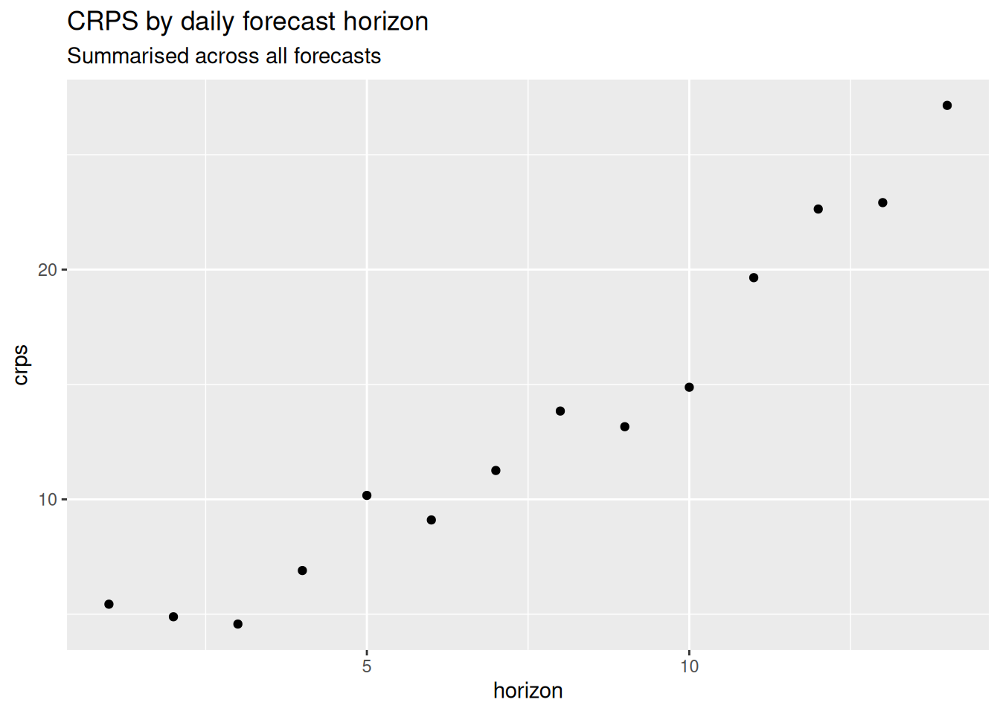
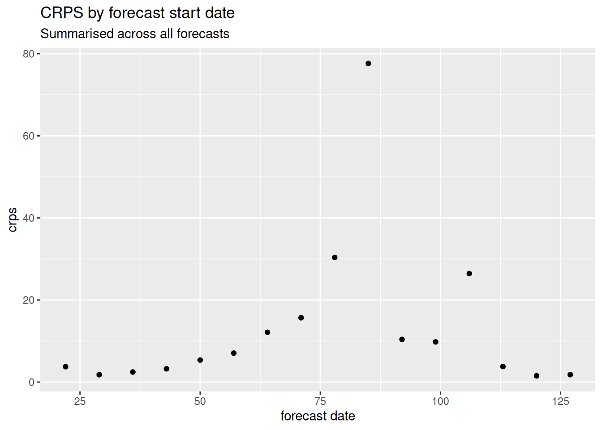
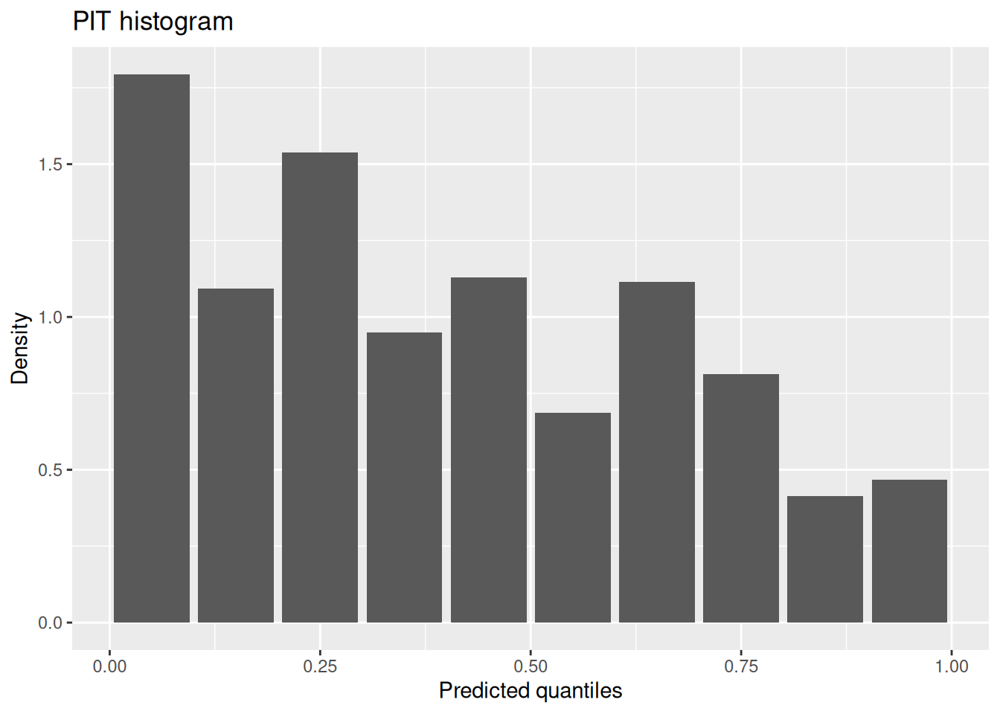
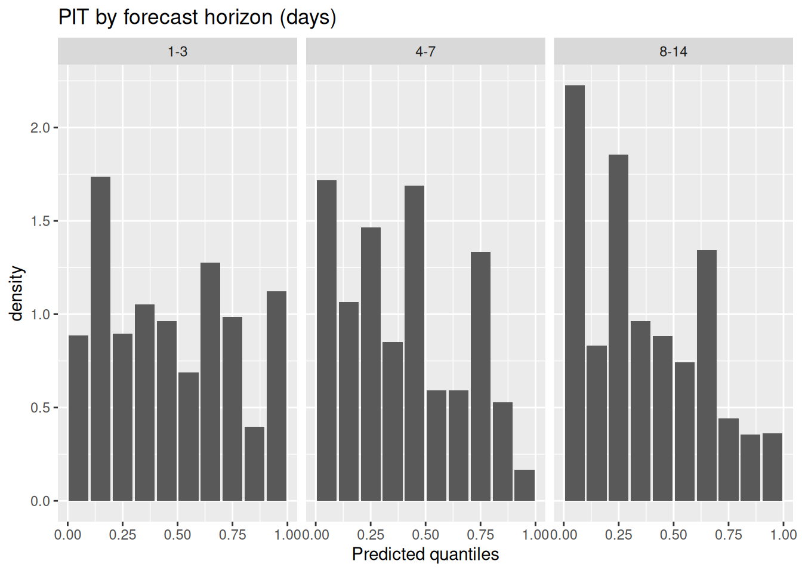
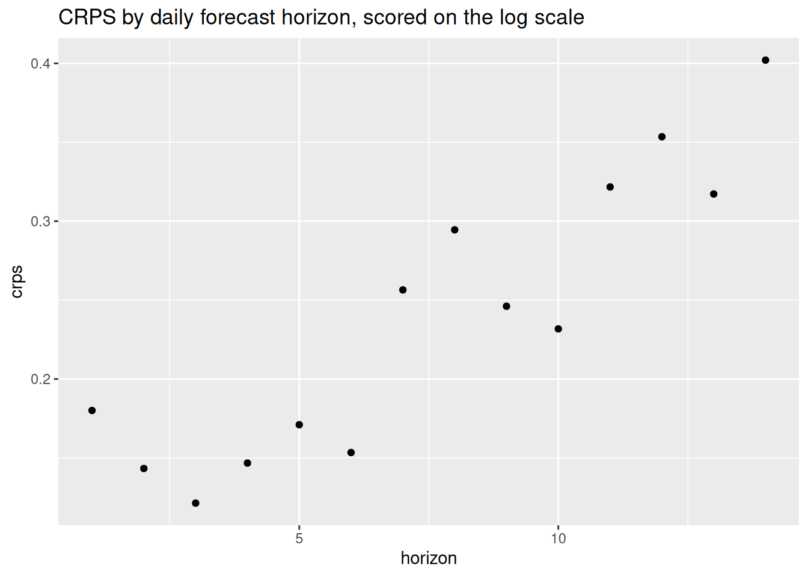
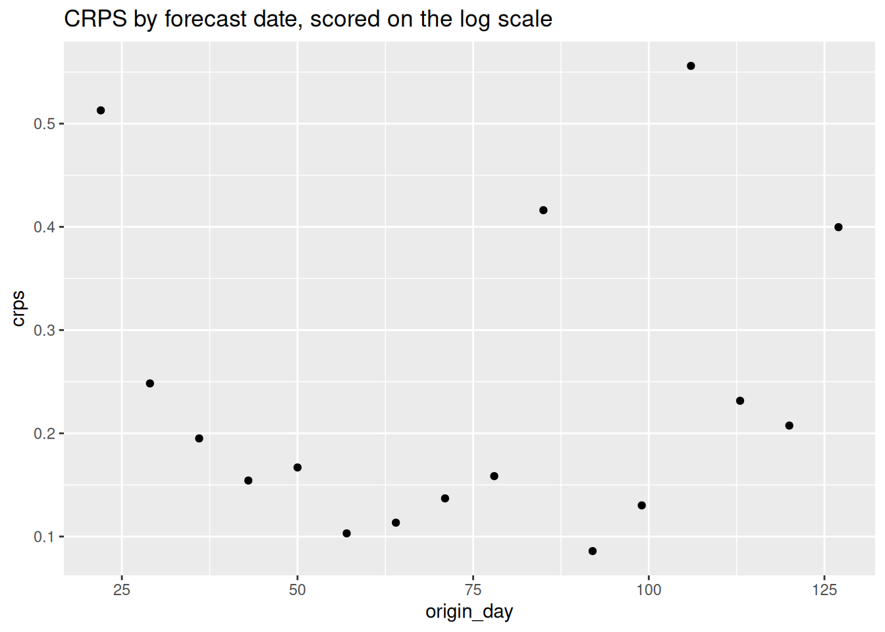

library("nfidd")
library("dplyr")
library("ggplot2")
library("scoringutils")Forecast evaluation
Introduction
So far we have focused on visualising forecasts, including confronting them with events that were observed after the forecast was made. Besides visualising the forecasts, we can also summarise performance quantitatively. In this session you will get to know several ways of assessing different aspects of forecast performance.
Slides
Objectives
The aim of this session is to introduce the concept of forecasting, using a simple model, and forecasting evaluation.
NoteSetup
Source file
The source file of this session is located at sessions/forecasting-evaluation.qmd.
Libraries used
In this session we will use the nfidd package to load a data set of infection times and access stan models and helper functions, the dplyr and package for data wrangling, ggplot2 library for plotting and the scoringutils package for evaluating forecasts.
Tip
The best way to interact with the material is via the Visual Editor of RStudio.
Initialisation
We set a random seed for reproducibility. Setting this ensures that you should get exactly the same results on your computer as we do. We also set an option that makes cmdstanr show line numbers when printing model code. This is not strictly necessary but will help us talk about the models.
set.seed(12345)
options(cmdstanr_print_line_numbers = TRUE)Introduction to forecast evaluation
An important aspect of making forecasts is that we can later confront the forecasts with what really happened and use this to assess whether our forecast model makes good predictions, or which of multiple models work best in which situation.
TipWhat do we look for in a good forecast? Some food for thought:
- Calibration: The forecast should be well calibrated. This means that the forecasted probabilities should match the observed frequencies. For example, if the model predicts a 50% probability of an event occurring, then the event should occur approximately 50% of the time.
- Unbiasedness: The forecast should be unbiased. This means that the average forecasted value should be equal to the average observed value. It shouldn’t consistently over- or underpredict.
- Accuracy: The forecast should be accurate. This means that the forecasted values should be close to the observed values.
- Sharpness: As long as the other conditions are fulfilled we want prediction intervals to be as narrow as possible. Predicting that “anything can happen” might be correct but not very useful.
Note that sharpness is a property of the forecasts themselves, whereas calibration, unbiasedness, and accuracy are properties that emerge from comparing forecasts to observed data.
The forecasting paradigm
The general principle underlying forecast evaluation is to maximise sharpness subject to calibration (Gneiting and Raftery 2007). This means that statements about the future should be correct (calibration) and should aim to have narrow uncertainty (sharpness).
Evaluate your forecast
In order to properly evaluate forecasts from this model we really need to forecast over a period of time, ideally capturing different epidemic dynamics. This will also give us more to work with when using scoring metrics. We will now load in some forecasts we made earlier and evaluate them.
data(rw_forecasts)
rw_forecasts# A tibble: 224,000 × 7
day .draw .variable .value horizon origin_day model
<dbl> <int> <chr> <dbl> <int> <dbl> <chr>
1 23 1 forecast 9 1 22 Random walk
2 23 2 forecast 5 1 22 Random walk
3 23 3 forecast 5 1 22 Random walk
4 23 4 forecast 3 1 22 Random walk
5 23 5 forecast 5 1 22 Random walk
6 23 6 forecast 6 1 22 Random walk
7 23 7 forecast 3 1 22 Random walk
8 23 8 forecast 2 1 22 Random walk
9 23 9 forecast 2 1 22 Random walk
10 23 10 forecast 4 1 22 Random walk
# ℹ 223,990 more rows
Tip
We generated these forecasts using the code in data-raw/generate-example-forecasts.r which uses the same approach we just took for a single forecast date but generalises it to many forecasts dates.
Some important things to note about these forecasts:
- We used a 14 day forecast horizon.
- Each forecast used all the data up to the forecast date.
- We generated 1000 posterior samples for each forecast.
- We started forecasting 3 weeks into the outbreak, and then forecast once a week (every 7 days), i.e., we created forecasts on day 22, day 29, … to day 71. We excluded the last 14 days to allow a full forecast.
- We made these forecasts by modelling simulated symptom onsets in an outbreak as we did before:
# simulate data
gen_time_pmf <- make_gen_time_pmf()
ip_pmf <- make_ip_pmf()
onset_df <- simulate_onsets(
make_daily_infections(infection_times), gen_time_pmf, ip_pmf
)Scoring your forecast
We now summarise performance quantitatively by using scoring metrics. Whilst some of these metrics are more useful for comparing models, many can be also be useful for understanding the performance of a single model.
Tip
In this session, we’ll use “proper” scoring rules: these are scoring rules that make sure no model can get better scores than the true model, i.e. the model used to generate the data. Of course we usually don’t know this (as we don’t know the “true model” for real-world data) but proper scoring rules incentivise forecasters to make their best attempt at reproducing its behaviour. For a comprehensive text on proper scoring rules and their mathematical properties, we recommend the classic paper by Gneiting and Raftery (2007).
We will use the {scoringutils} package to calculate these metrics. Our first step is to convert our forecasts into a format that the {scoringutils} package can use. We will use as_forecast_sample() to do this:
sc_forecasts <- rw_forecasts |>
left_join(onset_df, by = "day") |>
filter(!is.na(.value)) |>
as_forecast_sample(
forecast_unit = c(
"origin_day", "horizon", "model"
),
observed = "onsets",
predicted = ".value",
sample_id = ".draw"
)
sc_forecastsForecast type: sampleForecast unit:origin_day, horizon, and model
sample_id predicted observed origin_day horizon model
<int> <num> <int> <num> <int> <char>
1: 1 9 2 22 1 Random walk
2: 2 5 2 22 1 Random walk
3: 3 5 2 22 1 Random walk
4: 4 3 2 22 1 Random walk
5: 5 5 2 22 1 Random walk
---
223996: 996 1 3 127 14 Random walk
223997: 997 1 3 127 14 Random walk
223998: 998 1 3 127 14 Random walk
223999: 999 0 3 127 14 Random walk
224000: 1000 1 3 127 14 Random walkAs you can see this has created a forecast object which has a print method that summarises the forecasts.
TipTake 2 minutes
What important information is in the forecast object?
NoteSolution
- The forecast unit which is the origin day, horizon, and model
- The type of forecast which is a sample forecast
Everything seems to be in order. We can now use the scoringutils package to calculate some metrics. We will use the default sample metrics (as our forecasts are in sample format) and score our forecasts.
sc_scores <- sc_forecasts |>
score()
sc_scores origin_day horizon model bias dss crps overprediction
<num> <int> <char> <num> <num> <num> <num>
1: 22 1 Random walk 0.477 2.0793761 0.800163 0.302
2: 22 2 Random walk 0.611 2.5778676 1.154219 0.584
3: 22 3 Random walk 0.066 2.2577877 0.656429 0.000
4: 22 4 Random walk 0.482 2.8847541 1.203126 0.460
5: 22 5 Random walk 0.631 3.4041524 1.686931 0.888
---
220: 127 10 Random walk 0.216 0.9035654 0.298445 0.000
221: 127 11 Random walk -0.883 3.9779852 2.031831 0.000
222: 127 12 Random walk -0.994 24.3459996 6.051919 0.000
223: 127 13 Random walk 0.617 1.4141084 0.496038 0.234
224: 127 14 Random walk -0.846 2.5788329 1.542148 0.000
underprediction dispersion log_score mad ae_median se_mean
<num> <num> <num> <num> <num> <num>
1: 0.000 0.498163 1.7674254 1.4826 1 2.461761
2: 0.000 0.570219 1.9905507 2.9652 2 4.721929
3: 0.000 0.656429 1.9607737 2.9652 0 0.546121
4: 0.000 0.743126 2.1527223 2.9652 2 5.466244
5: 0.000 0.798931 2.3370219 2.9652 3 10.686361
---
220: 0.000 0.298445 0.4056026 1.4826 0 0.351649
221: 1.764 0.267831 3.2071257 1.4826 3 6.817321
222: 5.802 0.249919 5.4246093 1.4826 7 45.468049
223: 0.000 0.262038 0.8987562 1.4826 1 1.411344
224: 1.274 0.268148 2.7098403 1.4826 2 3.802500
NoteLearning more about the output of
score()
See the documentation for ?get_metrics.forecast_sample for information on the default metrics for forecasts that are represented as samples (in our case the samples generated by the stan model).
At a glance
Before we look in detail at the scores, we can use summarise_scores to get a quick overview of the scores (by default calculating a mean across all forecasts). Don’t worry if you don’t understand all the scores yet, we will go some of them in more detail in the next section and you can find more information in the {scoringutils} documentation.
sc_scores |>
summarise_scores(by = "model") model bias dss crps overprediction underprediction
<char> <num> <num> <num> <num> <num>
1: Random walk 0.2106518 6.295836 13.32493 7.828018 0.8525804
dispersion log_score mad ae_median se_mean
<num> <num> <num> <num> <num>
1: 4.644333 3.927755 19.29697 18.04464 1606.823
TipTake 2 minutes
Before we look in detail at the scores, what do you think the scores are telling you?
Continuous ranked probability score
What is the Continuous Ranked Probability Score (CRPS)?
For point forecasts (single value predictions), forecast accuracy is commonly measured using the Mean Absolute Error (MAE), which calculates the average (mean) absolute difference between predicted and observed values. For probabilistic forecasts, where the forecast is a distribution rather than a single point estimate (i.e. like ours), we can use the Continuous Ranked Probability Score (CRPS). The CRPS is a proper scoring rule that generalises MAE to probabilistic forecasts. Note that for deterministic forecasts, CRPS reduces to MAE.
The CRPS can be thought about as the combination of two key aspects of forecasting: 1. The accuracy of the forecast in terms of how close the predicted values are to the observed value. 2. The confidence of the forecast in terms of the spread of the predicted values.
By balancing these two aspects, the CRPS provides a comprehensive measure of the quality of probabilistic forecasts.
TipKey things to note about the CRPS
- Small values are better
- As it is an absolute scoring rule it can be difficult to use to compare forecasts across scales.
TipMathematical Definition (optional)
The CRPS for a predictive distribution characterised by a cumulative distribution function \(F\) and observed value \(x\) is calculated as
\[ CRPS(F, x) = \int_{-\infty}^{+\infty} \left( F(y) - \mathbb{1} ({\y \geq x})^2 \right). \]
For distributions with a finite first moment (a mean exists and it is finite), the CRPS can be expressed as:
\[ CRPS(F, y) = \mathbb{E}_{X \sim F}[|X - y|] - \frac{1}{2} \mathbb{E}_{X, X' \sim F}[|X - X'|] \]
where \(X\) and \(X'\) are independent random variables sampled from the distribution \(F\). To calculate this we simply replace \(X\) and \(X'\) by samples from our posterior distribution and sum over all possible combinations.
Whilst the CRPS is a very useful metric it can be difficult to interpret in isolation. It is often useful to compare the CRPS of different models or to compare the CRPS of the same model under different conditions. For example, lets compare the CRPS across different forecast horizons.
sc_scores |>
summarise_scores(by = "horizon") |>
ggplot(aes(x = horizon, y = crps)) +
geom_point() +
labs(title = "CRPS by daily forecast horizon",
subtitle = "Summarised across all forecasts")
and at different time points.
sc_scores |>
summarise_scores(by = "origin_day") |>
ggplot(aes(x = origin_day, y = crps)) +
geom_point() +
labs(title = "CRPS by forecast start date",
subtitle = "Summarised across all forecasts", x = "forecast date")
TipTake 5 minutes
How do the CRPS scores change based on forecast date? How do the CRPS scores change with forecast horizon? What does this tell you about the model?
NoteSolution
- The CRPS scores increase for forecast dates where incidence is higher.
- The CRPS scores increase with forecast horizon.
- As the CRPS is an absolute measure it is hard to immediately know if the CRPS increasing with forecast date indicates that the model is performing worse.
- However, the CRPS increasing with forecast horizon is a sign that the model is struggling to capture the longer term dynamics of the epidemic.
PIT histograms
As well as the CRPS we can also look at the calibration and bias of the model. Calibration is the agreement between the forecast probabilities and the observed frequencies. Bias is a measure of how likely the model is to over or under predict the observed values.
There are many ways to assess calibration and bias but one common way is to use a probability integral transform (PIT) histogram. This is a histogram of the cumulative distribution of function of a forecast evaluated at the observed value.
TipInterpreting the PIT histogram
- Ideally PIT histograms should be uniform.
- If is a U shape then the model is overconfident and if it is an inverted U shape then the model is underconfident.
- If it is skewed then the model is biased towards the direction of the skew.
TipMathematical Definition (optional)
Continuous Case
For a continuous random variable \(X\) with cumulative distribution function (CDF) \(F_X\), the PIT is defined as:
\[ Y = F_X(X) \]
where \(Y\) is uniformly distributed on \([0, 1]\).
Integer Case
When dealing with integer forecasts, the standard PIT does not yield a uniform distribution even if the forecasts are perfectly calibrated (Czado, Gneiting, and Held 2009). To remedy this, there are different solutions (the get_pit_histogram() function used below uses the non-randomised version by default):
Randomised PIT
One way to use integer count is a randomised version of the PIT. For an integer-valued random variable \(X\) with CDF \(F_X\), the randomised PIT is defined as:
\[ U = F_X(k) + v \cdot (F_X(k) - F_X(k-1)) \]
where:
- \(k\) is the observed integer value,
- \(F_X(k)\) is the CDF evaluated at \(k\),
- \(v\) is a random variable uniformly distributed on \([0, 1]\).
This transformation ensures that \(U\) is uniformly distributed on \([0, 1]\) if the predictive distribution \(F_X\) is correctly specified.
Non-randomised PIT
A second option is to plot a slightly different variable:
\[ G(u) = \begin{cases} 0, & u \leq F_X(k-1), \\ (u - F_X(k-1))/(F_X(k) - F_X(k-1)), & F_X(k-1) < u < F_X(k), \\ 1, & u \geq F_X(k), \end{cases} \]
if \(k \geq 1\) and
\[ G(u) = \begin{cases} u/F_X(0), & u \leq F_X(0), \\ 1, & u \geq F_X(0), \end{cases} \]
if \(k=0\) where as before
- \(k\) is the observed integer value,
- \(F_X(k)\) is the CDF evaluated at \(k\).
Again, the transformed G(u) is uniformly distributed on \([0, 1]\) if the predictive distribution \(F_X\) is correctly specified.
Let’s first look at the overall PIT histogram.
sc_forecasts |>
get_pit_histogram() |>
ggplot(aes(x = mid, y = density)) +
geom_col() +
labs(title = "PIT histogram", x = "Predicted quantiles", y = "Density")
As before lets look at the PIT histogram by forecast horizon. To save space we will group horizons into a few days each:
sc_forecasts |>
mutate(group_horizon = case_when(
horizon <= 3 ~ "1-3",
horizon <= 7 ~ "4-7",
horizon <= 14 ~ "8-14"
)) |>
get_pit_histogram(by = "group_horizon") |>
ggplot(aes(x = mid, y = density)) +
geom_col() +
facet_wrap(~group_horizon) +
labs(title = "PIT by forecast horizon (days)", x = "Predicted quantiles")
and then for different forecast dates.
sc_forecasts |>
get_pit_histogram(by = "origin_day") |>
ggplot(aes(x = mid, y = density)) +
geom_col() +
facet_wrap(~origin_day) +
labs(title = "PIT by forecast date", x = "Predicted quantiles")
TipTake 5 minutes
What do you think of the PIT histograms? Do they look well calibrated? Do they look biased?
NoteSolution
- It looks like the model is biased towards overpredicting and that this bias gets worse at longer forecast horizons.
- Looking over forecast dates it looks like much of this bias is coming from near the outbreak peak where the model is consistently overpredicting but the model is also over predicting at other times.
Scoring on the log scale
We can also score on the logarithmic scale. This can be useful if we are interested in the relative performance of the model at different scales of the data, for example if we are interested in the model’s performance at capturing the exponential growth phase of the epidemic. In some sense scoring in this way can be an approximation of scoring the effective reproduction number estimates. Doing this directly can be difficult as the effective reproduction number is a latent variable and so we cannot directly score it.
We again use scoringutils but first transform both the forecasts and observations to the log scale.
log_sc_forecasts <- sc_forecasts |>
transform_forecasts(
fun = log_shift,
offset = 1,
append = FALSE
)
log_scores <- log_sc_forecasts |>
score()For more on scoring on the log scale see this paper on scoring forecasts on transformed scales.
At a glance
log_scores |>
summarise_scores(by = "model") model bias dss crps overprediction underprediction
<char> <num> <num> <num> <num> <num>
1: Random walk 0.1698929 -0.6932839 0.2385248 0.1172615 0.02994692
dispersion log_score mad ae_median se_mean
<num> <num> <num> <num> <num>
1: 0.09131641 0.5302044 0.3940836 0.3242059 0.196584
TipTake 2 minutes
Before we look in detail at the scores, what do you think the scores are telling you? How do you think they will differ from the scores on the natural scale?
CRPS
log_scores |>
summarise_scores(by = "horizon") |>
ggplot(aes(x = horizon, y = crps)) +
geom_point() +
labs(title = "CRPS by daily forecast horizon, scored on the log scale")
and across different forecast dates
log_scores |>
summarise_scores(by = "origin_day") |>
ggplot(aes(x = origin_day, y = crps)) +
geom_point() +
labs(title = "CRPS by forecast date, scored on the log scale")
TipTake 5 minutes
How do the CRPS scores change based on forecast date? How do the CRPS scores change with forecast horizon? What does this tell you about the model?
NoteSolution
- As for the natural scale CRPS scores increase with forecast horizon but now the increase appears to be linear vs exponential.
- There has been a reduction in the CRPS scores for forecast dates near the outbreak peak compared to other forecast dates but this is still the period where the model is performing worst.
Going further
Challenge
- In which other ways could we summarise the performance of the forecasts?
- What other metrics could we use?
- There is no one-size-fits-all approach to forecast evaluation, often you will need to use a combination of metrics to understand the performance of your model and typically the metrics you use will depend on the context of the forecast. What attributes of the forecast are most important to you?
- One useful way to think about evaluating forecasts is to consider exploring the scores as a data analysis in its own right. For example, you could look at how the scores change over time, how they change with different forecast horizons, or how they change with different models. This can be a useful way to understand the strengths and weaknesses of your model. Explore some of these aspects using the scores from this session.
Methods in practice
- There are many other metrics that can be used to evaluate forecasts. The documentation for the
{scoringutils}package has a good overview of these metrics and how to use them.
Wrap up
- Review what you’ve learned in this session with the learning objectives
- Share your questions and thoughts
Czado, Claudia, Tilmann Gneiting, and Leonhard Held. 2009. “Predictive Model Assessment for Count Data.” Biometrics 65 (4): 1254–61. https://doi.org/10.1111/j.1541-0420.2009.01191.x.
Gneiting, Tilmann, and Adrian E Raftery. 2007. “Strictly Proper Scoring Rules, Prediction, and Estimation.” Journal of the American Statistical Association 102 (477): 359–78. https://doi.org/10.1198/016214506000001437.